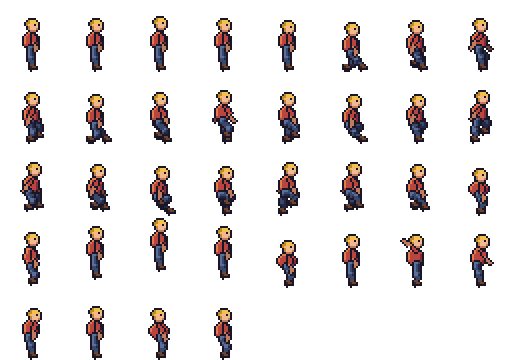

Import a pixel art JSON sprite sheet into Unreal Engine 5 Paper2D, with flipbooks
To import a JSON sprite sheet (name.png with a TexturePacker-style name.atlas.json) into Unreal Engine 5 Paper2D, import the JSON with Paper2D's own sprite sheet importer, then give each Flipbook a frame rate of 1000 ÷ the largest step that divides every frame's milliseconds, with each key frame running its time ÷ that step. On 7 November 2026 in Unreal Engine 5.8.4, our free 157-line script did both for seven Pixelbolt sheets (235 frames, 26 animations): each stored texture matched its sheet pixel for pixel, every sprite got its frame's rectangle, trim and pivot, and every flipbook kept its frame times (method, script and data below).
We make Pixelbolt, a free, MIT-licensed pixel art toolkit for game makers and AI agents. This guide is about getting its sprite sheets into Unreal; Paper2D's importer also reads JSON sheets from TexturePacker and Adobe Flash, but the script expects a Pixelbolt atlas.
Pixelbolt 0.12.1 · Unreal Engine 5.8.4 (Windows) · Published 7 November 2026 · Last checked 7 November 2026 · On this page: Five steps · What Paper2D did · Frame times · Without the script · When to use something else · How we tested


Five steps
- Make the sheet and its atlas. With Node.js 20 or newer:
npx -y pixelbolt@0.12.1 compile --preset hero --out hero.json npx -y pixelbolt@0.12.1 render hero.json --out C:/pixelbolt/herocompileturns one of Pixelbolt's shipped presets (here the hero) into a recipe; skip it for a recipe of your own.renderwrites a new folder holdinghero.pngandhero.atlas.json, among other files. In the browser instead, the playground's Atlas PNG + JSON button saves the same two files; it renders on Pixelbolt 0.9.2, and a 0.9.2 campfire, rendered from the command line, passed the same test. - Download pixelbolt_paper2d.py into
C:/pixelbolt, or any folder whose path has no spaces. - Turn on two plugins. In Unreal, Edit → Plugins: Paper2D (on by default) and Python Editor Script Plugin (off by default, marked Beta). Restart the editor when it asks.
- Run the script. Open Window → Output Log, choose Cmd beside its command box, and type:
The last part is the Content Browser folder (defaultpy C:/pixelbolt/pixelbolt_paper2d.py C:/pixelbolt/hero/hero.atlas.json /Game/Sprites/Hero/Game/Pixelbolt/<name>); give each import a folder of its own, since the script stops, changing nothing, if the folder already holds assets. For the hero it took under a second in our test and leftTextures/hero, the Sprite Sheethero_atlas, one Sprite per frame inFrames/and one Flipbook per animation inFlipbooks/, such ashero_walk, all saved. It also sets the texture's Mip Gen Settings to NoMipmaps (see below). - Use the flipbooks. Drag one into the level, which places it as a Paper Flipbook Actor (the editor's "Animated Sprite"), or set it on a Paper Flipbook Component. The component loops by default and has no looping checkbox, so for an animation Pixelbolt marks as playing once (the hero's jump, attack and hurt, which the script lists), call Set Looping with it unticked in a Blueprint, then Play From Start. (From Paper2D's 5.8.4 source; we did not place or play a flipbook.)
The Output Log shows two warnings per import: AssetTools' Two factories registered with same priority (Paper2D's import and re-import factories) and Paper2D's Unexpected 'app' named 'Pixelbolt' … Parsing will continue. By Paper2D's source, the second appears for a sheet whose meta.app doesn't start with Adobe Flash's or TexturePacker's name (one with no meta.app or meta.image is refused). In our test every field Paper2D reads (rectangle, trim, untrimmed size, pivot) came through right. It ignores Pixelbolt's frame times and animations, which is what the script is for.
What Paper2D did with the seven sheets
We ran the test twice, in a project with Unreal's default plugins and in one with every engine plugin off but Paper2D and Python. Both gave these results.
| Sheet | Frames | Flipbooks | Texture pixels | Pivot | Material |
|---|---|---|---|---|---|
| Forest spirit, 24 × 24, frames of 100 to 240 ms | 6 | 3 | identical | canvas centre (no anchor) | translucent |
| Forest spirit, trimmed, at 2× | 6 | 3 | identical | canvas centre, trims kept | translucent |
| Campfire, 32 × 48, frames of 70 ms | 24 | 1 | identical | canvas centre | masked |
| Hero, 32 × 36, frames of 80 and 200 ms | 36 | 6 | identical | each frame's anchor | masked |
| Fire spells, 64 × 64, frames of 40 to 100 ms | 107 | 11 | identical | the anchor, (32, 40) | masked |
| Explosion, 64 × 64 on a 512 × 256 sheet, frames of 60 ms | 32 | 1 | identical | canvas centre | masked |
| Campfire rendered by Pixelbolt 0.9.2 | 24 | 1 | identical | canvas centre | masked |
- Pixels. "Identical" means the texture as Unreal stored it, exported back to PNG, matched the Pixelbolt sheet pixel for pixel. In the default-plugins project, Unreal's Interchange framework imported the PNGs; in the other, the older texture importer did.
- Sprites. Each sprite's rectangle, its trim offset and its untrimmed size match the atlas, at 1 pixel per unit. These results, the texture group, the compression and the material choice come from Paper2D's import settings (Project Settings), which we left at their defaults.
- Pivots. Paper2D reads each frame's
pivot, which Pixelbolt writes for a recipe with an anchor (here the hero and the fire spells), and otherwise uses the centre of the frame's untrimmed canvas. Worked out from Paper2D's own vertex data, every frame's pivot sits on that point, so the frames of a flipbook line up, trimmed ones included. By Paper2D's source a pivot is snapped to a whole pixel, so the centre of an odd-sized canvas moves half a pixel; all our canvases had even sizes. - Materials. Paper2D chose the masked sprite material for sheets whose pixels are all fully opaque or fully clear, and the translucent one for the forest spirit, whose soft edges are partly transparent. By its source it decides frame by frame; no test sheet mixed the two.
- Texture settings. Paper2D set Texture Group 2D Pixels (unfiltered) and Compression Uncompressed (RGBA8); Filter stayed Default (from Texture Group), which that group's line in the engine's
BaseDeviceProfiles.inimakes point (nearest) filtering, and sRGB stayed on. No smoothing and no compression, as pixel art needs. - Mipmaps depend on the sheet's size. Six of the sheets have a side that isn't a power of two, and Unreal gave those NoMipmaps by itself. The explosion's 512 × 256 sheet came in with Mip Gen Settings FromTextureGroup, which for 2D Pixels makes smaller copies (SimpleAverage in
BaseDeviceProfiles.ini) that blur pixel art when a sprite is drawn small. So the script sets NoMipmaps on every sheet it imports; without the script, set it yourself on a power-of-two sheet.
Our test ran without a GPU, so we checked these settings, not a frame drawn on screen.
Frame times
Pixelbolt gives every frame its own time in whole milliseconds. A Paper2D Flipbook has one Frames Per Second and shows each key frame for a whole number of frames, its frame run (Epic's Paper 2D Flipbooks page). So the script picks, for each animation, the largest step that divides every frame time: the frame rate is 1000 ÷ that step, and each key frame runs its time ÷ the step. All 26 flipbooks came out at their animations' lengths (to within 0.01 ms, our check's tolerance, since Unreal stores the length as a float), and asked for the sprite at the middle of each frame, every flipbook returned that frame's sprite.
| Animation | Frame times (ms) | Frames per second | Frame runs |
|---|---|---|---|
| Hero walk | 8 × 80 | 12.5 | 1 each |
| Campfire | 24 × 70 | 14.2857 | 1 each |
| Explosion (plays once) | 32 × 60 | 16.6667 | 1 each |
| Forest spirit idle | 240, 140, 220, 100, 220, 140, 160 | 50 | 12, 7, 11, 5, 11, 7, 8 |
| Fire spells impact | 12 frames from 40 to 100 (676 in all) | 1000 | 40 to 100 |
Paper2D's 5.8.4 source clamps Frames Per Second to 1000, its highest value, so even a 41 ms frame keeps its exact time. Paper2D's own Create Flipbooks (right-click a Sprite Sheet) gives every frame a run of 1 at one frame rate, by the same source: fine for an evenly timed loop like the campfire once you set 14.2857 frames per second, but it flattens the forest spirit's or the spell's mixed times. It also groups sprites by the last number in their names (sprites with none go into one flipbook, in name order) and never reads the atlas's animations, so it can't rebuild the hero's or the forest spirit's.
Without the script
Drag hero.atlas.json (with hero.png beside it) into the Content Browser: Epic's Import sprites page describes the same import for TexturePacker's files, which makes a Sprite Sheet asset with Frames and Textures folders. The script imports through the editor's own import call with no importer named, so Unreal picks Paper2D's sprite sheet importer by the file's type and content; we tested that scripted import, not a drag. On a sheet whose sides are both powers of two, set the texture's Mip Gen Settings to NoMipmaps.
Then build each flipbook: select its sprites, right-click, Create Flipbook. It adds the sprites in alphabetical order (Epic's Paper 2D Flipbooks page), so in the Flipbook editor reorder the key frames to match the animation's frames list in the atlas, add any frame the animation repeats (the forest spirit's idle shows float twice), and set the frames per second and each frame run from the frame times, the atlas's duration in milliseconds.
When to use something else
- TexturePacker packs many separate images into one sheet and has a Paper2D exporter that writes a
.paper2dspritesfile, which you drag into the Content Browser (Epic's Import sprites page for 5.8). Pivots are set in TexturePacker's sprite settings. It is paid, with a 7-day trial (CodeAndWeb's Paper 2D tutorial, updated 8 September 2026, read 7 November 2026). Use it when your frames are loose PNGs from several sources, such as a bought pack. From its docs, not run by us. - An Aseprite importer plugin, if you draw in Aseprite: ENFP-Dev-Studio's importer reads
.asepritefiles into Paper2D, makes flipbooks on import, named from its animation tags, and can add experimental PaperZD animation assets (its forum thread, v1.10 of 13 June 2026, read 7 November 2026; its v1.9 notes say it removed the option to take frame rates from Aseprite's timing). From its notes, not run by us. - Paper2D's own Create Flipbooks, for evenly timed animations whose sprites are numbered in playback order (above).
- Godot or Phaser instead of Unreal: Pixelbolt writes a Godot 4 SpriteFrames file with each animation's frame times (exact for most timings; see the notes), and the atlas loads in Phaser with
load.atlas(game integration notes).
How we tested
- Sheets. Seven bundles rendered from Pixelbolt's own examples with 0.12.1 from npm (the forest spirit, the same trimmed at 2×, the campfire, the hero, the fire spells and the explosion), and the campfire again with 0.9.2, the version the playground pinned on test day. make_sheets.sh rebuilds them byte for byte; the files as tested are in
data/out/, for example hero.atlas.json and hero.png. - Unreal. Unreal Engine 5.8.4 (an installed build on Windows 11) with two throwaway Blueprint-only projects: P2DDefault.uproject keeps Unreal's default plugins, turns the Python Editor Script Plugin on and turns off Fab, Bridge and two telemetry plugins, which the test didn't need; P2DTest.uproject turns every engine plugin off but Paper2D and Python. The editor ran headless with
-RenderOffScreen(no window),-nullrhi(no GPU, so nothing was drawn) and-unattended, which answers any dialog by itself. - The record. ue_check.py ran the guide's script on each sheet inside the editor, then recorded what Paper2D built: the assets and whether they were saved, the texture's settings and its stored pixels exported back as PNG, each sprite's rectangle, trim, pivot mode, pixels per unit, material and baked vertices, and each flipbook's frame rate, key frames, length and the sprite it returns for the middle of every frame. The whole run, from launch to exit, took about 30 seconds with the default plugins and 16 without (by the log timestamps).
- The check. check_results.py compared each record with the atlas, decoding the PNGs with Pillow (an image library independent of Pixelbolt), and requires the texture settings above: all seven sheets passed in both projects (default plugins, Paper2D and Python only).
- The command. The step 4 command, with our kit's paths and
,QUIT_EDITORadded, was run through-ExecCmdsthree times on the hero in the default-plugins project: into a new folder (44 assets), into the same folder again (the script stopped with "already holds assets" and changed nothing) and into/Game/Sprites/Hero2(44 assets). Log excerpts. - Not tested: a frame drawn on screen; a windowed editor with someone at it; dragging the JSON in by hand; placing or playing a flipbook; other Unreal versions; macOS and Linux; paths with spaces; JSON sheets from other tools (the script refuses anything but a Pixelbolt atlas).

To repeat it: data/README.txt has the commands. The searches this page answers, and what ranked for them on 7 November 2026, are in searches-2026-11-07.txt.
Licence
Pixelbolt and pixelbolt_paper2d.py are free and open source under the MIT licence. The example recipes ship in Pixelbolt's MIT-licensed npm package, and its README says the included artwork is original and covered by the same licence. Unreal Engine and Paper2D are Epic Games' and come under Unreal Engine's own licence.
Pixel art to import
- Fire: a campfire, a torch and a hand-drawn flame
- Explosions: a fireball with smoke and sparks, and small particle bursts
- Smoke and steam: a cartoon smoke puff, a steam vent and a dust wave
- Water: a waterfall, a splash, a drip and a dam break
- Slime and honey: a squashing slime, a bursting slime, pouring honey and a honey drop
- Magic: a spell swirl and a bubbling potion
All guides · The playground · The gallery · All comparisons · Pixelbolt home